A decimal is a number that includes both a whole part and a fractional part. Decimals help represent values that are not whole numbers but fall between them.
Breaking Down a Decimal
A decimal number consists of different parts:
- Whole number part: The number before the decimal point.
- Fractional part: The number after the decimal point, representing a part of a whole.
- Decimal point (.): The separator between the whole and fractional parts.
You may notice decimal numbers in everyday life, such as: Grocery stores: Prices like $2.99 or $1.50. Weighing scales: A bag of apples weighing 2.3 kg.
How to Read a Decimal?
There are two ways to read a decimal:
Informal Way – Read the whole number, say "point," then read each decimal digit separately.
Example: 17.48
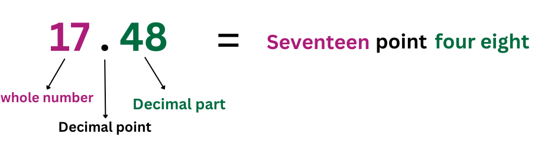
Formal Way – Read the whole number, say "and," then read the fractional part using its place value.
Example: 25.678
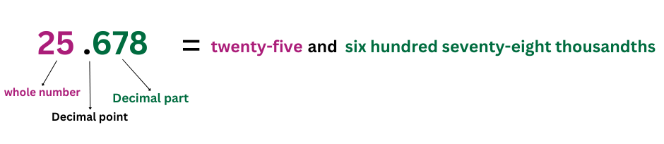
Understanding Decimal Place Value
A decimal place value chart helps us understand the value of each digit in a decimal number.
Each place in a number has a value. In whole numbers, we have ones, tens, hundreds, and so on.
In decimal numbers, the values become smaller after the decimal point.
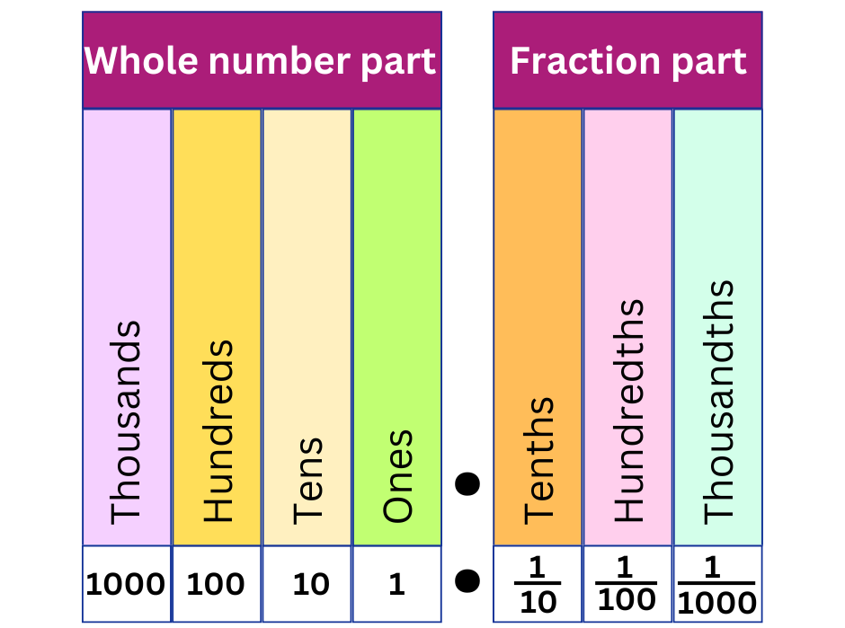
- Ones (1) → The first place from the right in the whole number part.
- Tens (10) → The second place from the right in the whole number part.
- Hundreds (100) → The third place from the right in the whole number part.
- Thousands (1000) → The fourth place from the right in the whole number part .
- Tenths (0.1) → The first place after the decimal point (1/10 of a whole).
- Hundredths (0.01) → The second place after the decimal point (1/100 of a whole).
- Thousandths (0.001) → The third place after the decimal point (1/1000 of a whole).
For example, in 1234.567:

🔹 1 is in the Thousands place → It means 1,000
🔹 2 is in the Hundreds place → It means 200
🔹 3 is in the Tens place → It means 30
🔹 4 is in the Ones place → It means 4
🔹 The decimal point (.) separates whole numbers from fractional parts.
🔹 5 is in the Tenths place → It means 5 tenths or 0.5
🔹 6 is in the Hundredths place → It means 6 hundredths or 0.06
🔹 7 is in the Thousandths place → It means 7 thousandths or 0.007
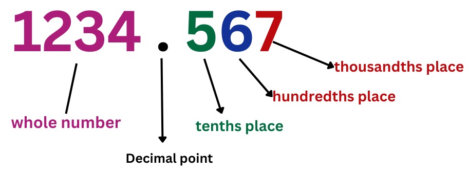
To compare decimals, we look at the value of each digit, starting from the left. Some people think a longer decimal is always bigger, but that's not true!
We have to compare them based on place value.
Write the decimals in the chart, lining up the digits correctly. First, compare the digits in the highest place value.
If they are the same, move to the next place value and continue until you find a difference.
Let’s compare 4.51 and 4.55:
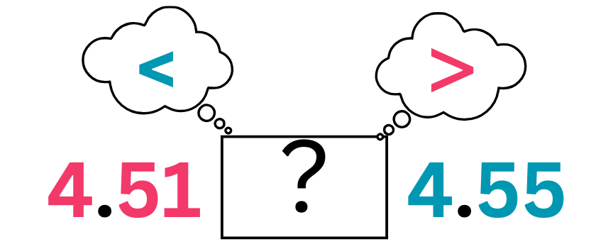
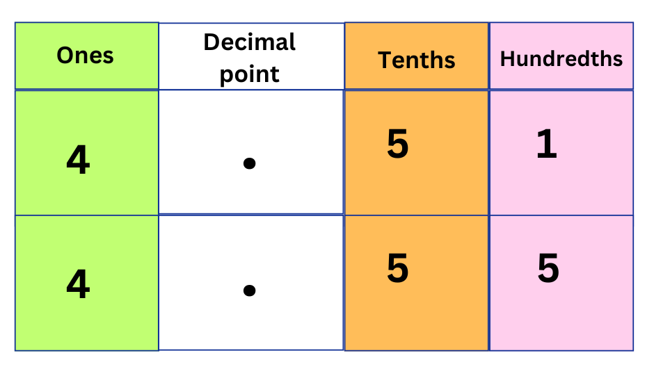
- Both numbers have 4 in the ones place, so they are equal so far.
- Both have 5 in the tenths place, so we keep going.
- In the hundredths place, 1 is smaller than 5.
Since 1 is smaller than 5, 4.51 is less than 4.55
We can say that 4.51 < 4.55
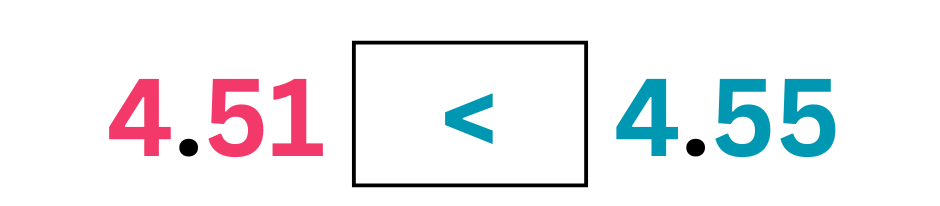
Rules for Comparing Decimals
We can compare decimals step by step to find which one is greater. Let’s break it down into simple steps:
Step 1: Use a Place Value Chart
Write the decimal numbers in a place value chart so that all the digits are lined up correctly. If one decimal has fewer digits, you can add zeros at the end to help with comparison.
Step 2: Compare the Whole Number Part
Start by looking at the whole number part of each decimal. The number with the greater whole number is the larger decimal.
Example:
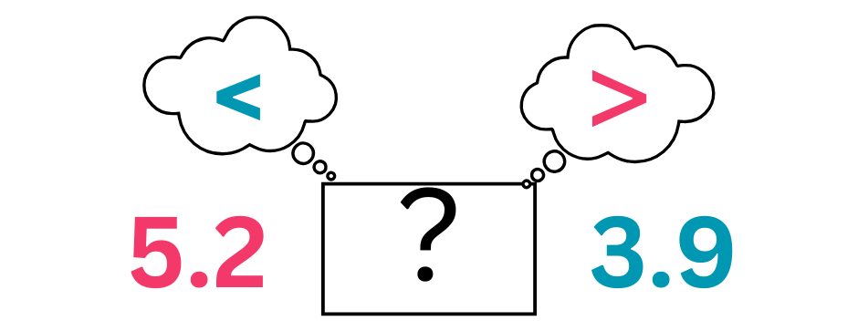
Comparing 5.2 and 3.9, we see that 5 is greater than 3.
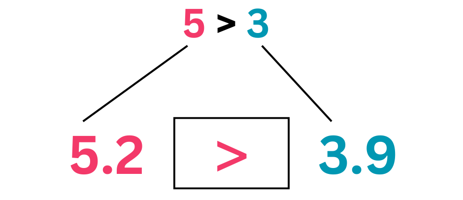
So 5.2 is greater than 3.9
Step 3: Compare the Decimal Places
If the whole number parts are the same, move to the tenths place. Compare the digits. If they are also the same, move to the hundredths place, and so on, until you find a difference.
Example:
Comparing 4.13 and 4.257 :
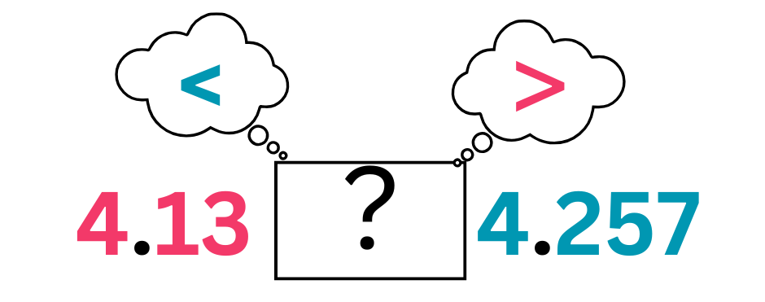
Both have the same whole number part that is 4.
Comparing the digits at the tenth place, we get 1 < 2.
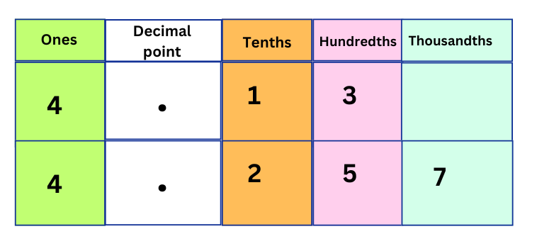
At this step we can say that the decimal 4.13 < 4.257
Comparing Decimals to the Hundredths Place
If the tenths place is the same, check the hundredths place.
Example: Comparing 4.135 and 4.157:
Let’s arrange them in the place value chart.
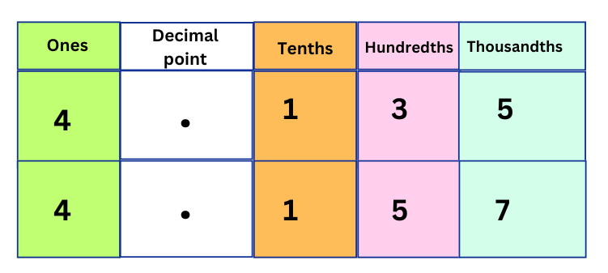
- Both have 4 in the ones place (same).
- Both have 1 in the tenths place (same).
- Thus, we compare the digits at the hundredths place.
3 < 5
Therefore, 4.135< 4.157
Ordering Decimals
To compare and order decimals, follow these steps:
- Use a Place Value Chart – Write the decimals in a place value chart to compare their digits correctly. If needed, add zeros at the end to make the comparison easier.
- Compare the Digits – Start with the whole number part. If they are the same, compare the tenths, then the hundredths, and so on until you find a difference.
-
Arrange in Order – Once you have compared the decimals, write them in the required order:
- Ascending Order (smallest to largest)
- Descending Order (largest to smallest)
Example: Compare and write in descending order: 0.52, 1.21, 1.27, 2.25, 2.29
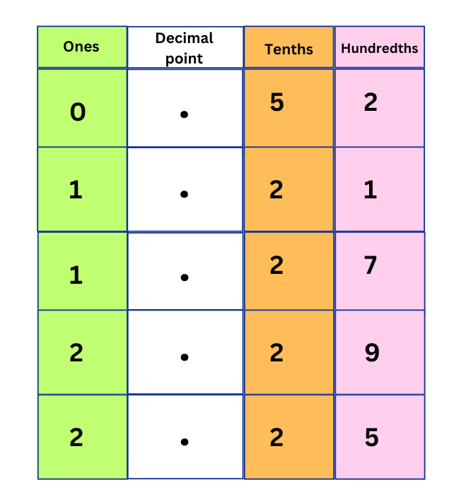
2.29 > 2.25 as ones and tenths are the same but at hundredth place 9 is bigger than 5.
1.27 > 1.21 as ones and tenths are the same but at hundredth place 7 is bigger than 1.
Also, comparing the whole number parts, we get:
2 > 1 > 0
So, in descending order we can put the numbers as:
2.29 > 2.25 > 1.27 > 1.21 > 0.52